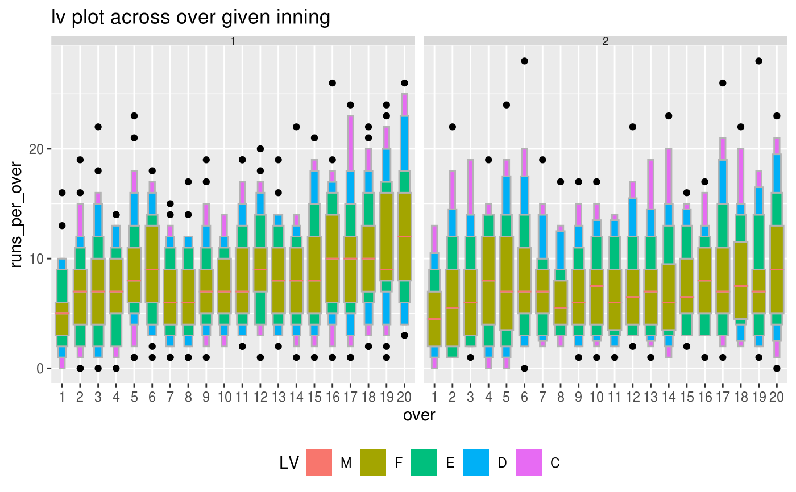

The Indian Premier League played by teams representing different cities in India from 2008 to 2016
cricket
A tibble with 8560 rows and 11 variables: **season**: years representing IPL season **match_id**: match codes **batting_team**: name of batting team **bowling_team**: name of bowling team **inning**: innings of the match **over**: overs of the inning **wicket**: number of wickets in each over **dot_balls**: number of balls with no runs in an over **runs_per_over**: Runs for each over **run_rate**: run rate for each over
[Kaggle IPL Data Analysis](https://www.kaggle.com/josephgpinto/ipl-data-analysis/data)
data(cricket) library(tsibble) library(dplyr) library(ggplot2) # convert data set to a tsibble ---- cricket_tsibble <- cricket %>% mutate(data_index = row_number()) %>% as_tsibble(index = data_index) # set the hierarchy of the units in a table ---- hierarchy_model <- tibble::tibble( units = c("index", "ball", "over", "inning", "match"), convert_fct = c(1, 6, 20, 2, 1)) # Compute granularities ---- cricket_tsibble %>% create_gran("over_inning", hierarchy_model)#> # A tsibble: 8,560 x 12 [1] #> season match_id batting_team bowling_team inning over wicket dot_balls #> <dbl> <dbl> <chr> <chr> <dbl> <dbl> <dbl> <dbl> #> 1 2008 2 Chennai Sup… Kings XI Pu… 1 1 0 4 #> 2 2008 2 Chennai Sup… Kings XI Pu… 1 2 0 2 #> 3 2008 2 Chennai Sup… Kings XI Pu… 1 3 1 4 #> 4 2008 2 Chennai Sup… Kings XI Pu… 1 4 0 3 #> 5 2008 2 Chennai Sup… Kings XI Pu… 1 5 0 3 #> 6 2008 2 Chennai Sup… Kings XI Pu… 1 6 0 3 #> 7 2008 2 Chennai Sup… Kings XI Pu… 1 7 1 1 #> 8 2008 2 Chennai Sup… Kings XI Pu… 1 8 1 3 #> 9 2008 2 Chennai Sup… Kings XI Pu… 1 9 0 1 #> 10 2008 2 Chennai Sup… Kings XI Pu… 1 10 0 2 #> # … with 8,550 more rows, and 4 more variables: runs_per_over <dbl>, #> # run_rate <dbl>, data_index <int>, over_inning <fct># Visualise distribution of runs across granularities ---- cricket_tsibble %>% filter(batting_team %in% c("Mumbai Indians", "Chennai Super Kings"))%>% prob_plot("inning", "over", hierarchy_model, response = "runs_per_over", plot_type = "lv")